Correccion metodologica - Comparacion y validacion
Datos reales; publicacion autorizada el 1 de octubre de 2026. Ambitos por cruce geometrico aprobado: 18 Plataformas y parroquias reales. No se fuerzan los conteos de la etiqueta parroquial.
1. Diccionario y cinco clases
Diccionario exacto de subtipos2. Ambitos operativos
850 registros SIN_ASIGNAR (820 dentro del canton, 30 fuera) no se incorporan por fuerza a urbano/rural. Mantienen sus coordenadas.
3. Calidad de coordenadas y recurrencia
Recurrencia global: 6.420 XY unicas; maximo 477. Se preservan todas las observaciones; no se deduplican, desplazan o ponderan por Emergencias. Repeticion no prueba error.
Base derivada y flags de coordenadas4-9. Seis superficies KDE
EPSG:32717; urbano 20 m, rural 100 m. Misma forma de kernel gaussiano truncado, normalizado a volumen 1; escala logaritmica fija compartida: 0 a 3038.20 eventos/km2. Sin normalizacion automatica por mapa.
URBANO / DELINCUENCIA: N=2229, h=500 mURBANO / VIOLENCIA: N=1268, h=400 mURBANO / CONVIVENCIA: N=6418, h=300 mRURAL / DELINCUENCIA: N=219, h=1500 m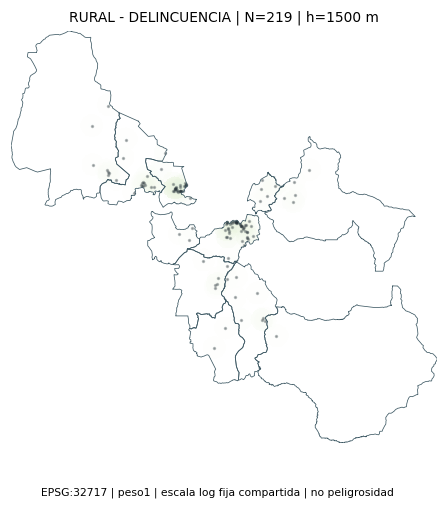
RURAL / VIOLENCIA: N=247, h=1500 mRURAL / CONVIVENCIA: N=402, h=1500 m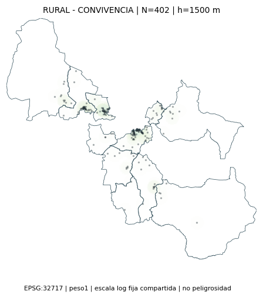
10-11. Comparacion y recomendacion de bandwidth
Validacion predictiva dejando fuera cada grupo XY completo; log-verosimilitud media con piso 1e-12/km2. Se elige el mayor puntaje, no el mejor aspecto visual. Todos los registros vuelven al raster final. Recomendaciones provisionales: rural 1.500 m queda en el limite superior ensayado y no demuestra optimalidad fuera del intervalo.
URBANO / DELINCUENCIA
Ver todos los candidatos
URBANO / DELINCUENCIA: 200 mURBANO / DELINCUENCIA: 250 mURBANO / DELINCUENCIA: 300 m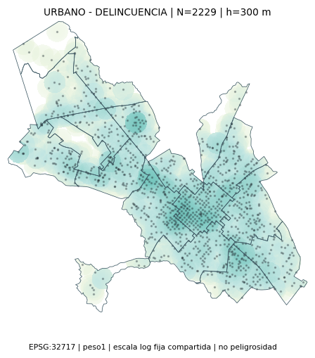
URBANO / DELINCUENCIA: 400 mURBANO / DELINCUENCIA: 500 mURBANO / DELINCUENCIA: 700 m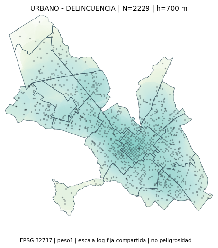
URBANO / VIOLENCIA
Ver todos los candidatos
URBANO / VIOLENCIA: 200 m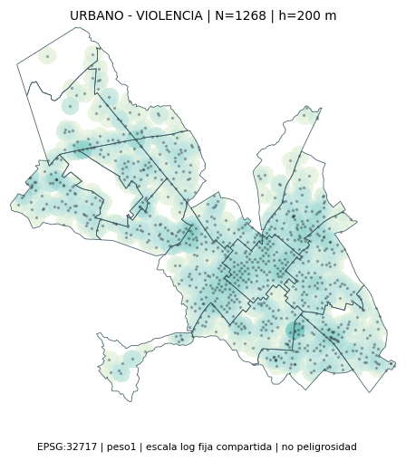
URBANO / VIOLENCIA: 250 mURBANO / VIOLENCIA: 300 mURBANO / VIOLENCIA: 400 mURBANO / VIOLENCIA: 500 mURBANO / VIOLENCIA: 700 m URBANO / CONVIVENCIA
Ver todos los candidatos
URBANO / CONVIVENCIA: 200 mURBANO / CONVIVENCIA: 250 mURBANO / CONVIVENCIA: 300 mURBANO / CONVIVENCIA: 400 mURBANO / CONVIVENCIA: 500 mURBANO / CONVIVENCIA: 700 m
RURAL / DELINCUENCIA
Ver todos los candidatos
RURAL / DELINCUENCIA: 500 m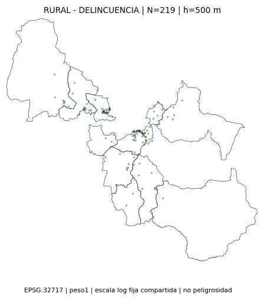
RURAL / DELINCUENCIA: 750 m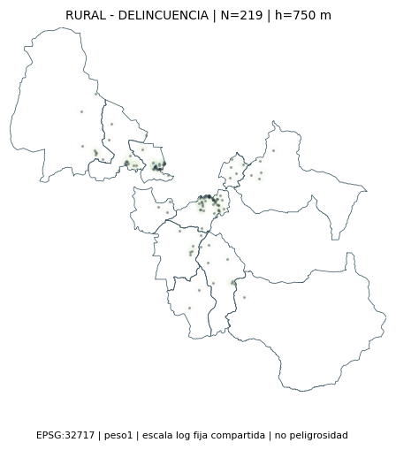
RURAL / DELINCUENCIA: 1000 m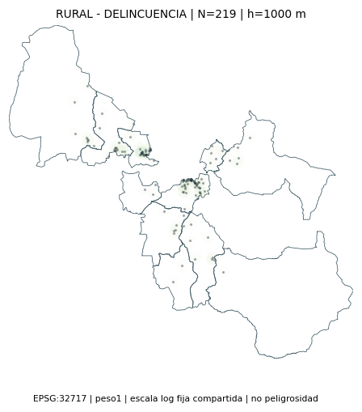
RURAL / DELINCUENCIA: 1200 m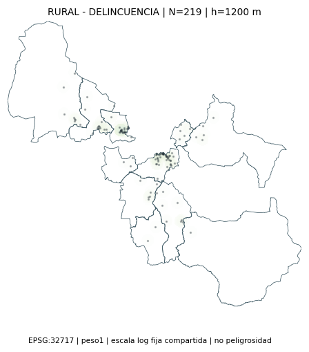
RURAL / DELINCUENCIA: 1500 m RURAL / VIOLENCIA
Ver todos los candidatos
RURAL / VIOLENCIA: 500 m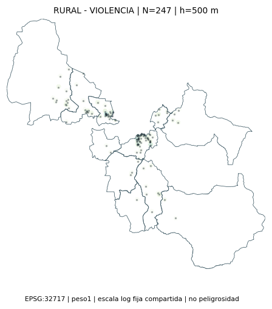
RURAL / VIOLENCIA: 750 m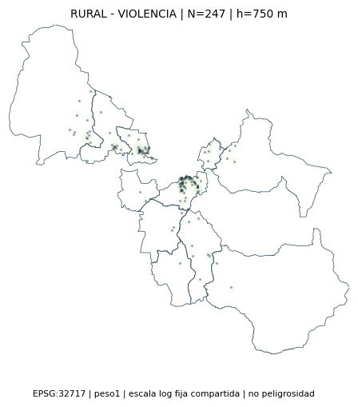
RURAL / VIOLENCIA: 1000 m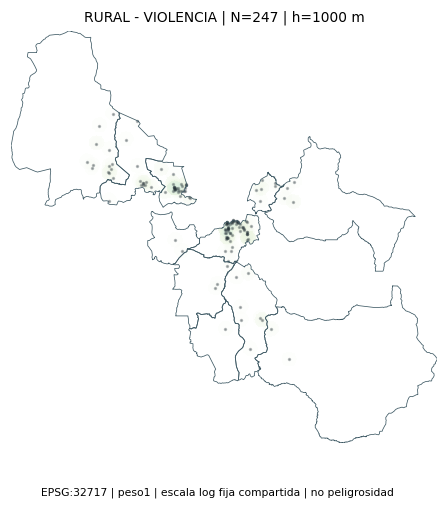
RURAL / VIOLENCIA: 1200 m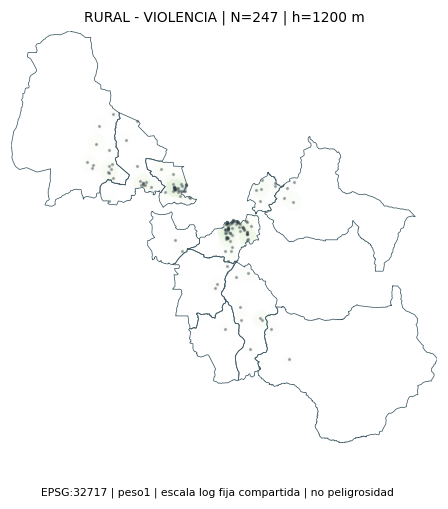
RURAL / VIOLENCIA: 1500 m RURAL / CONVIVENCIA
Ver todos los candidatos
RURAL / CONVIVENCIA: 500 m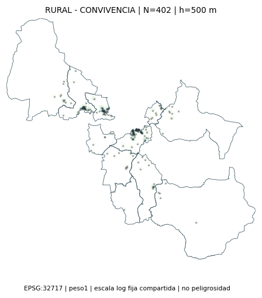
RURAL / CONVIVENCIA: 750 m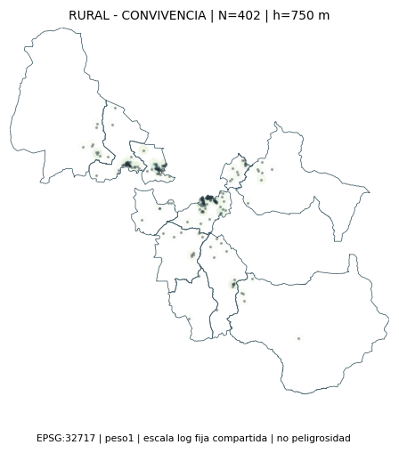
RURAL / CONVIVENCIA: 1000 m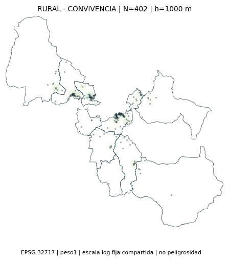
RURAL / CONVIVENCIA: 1200 m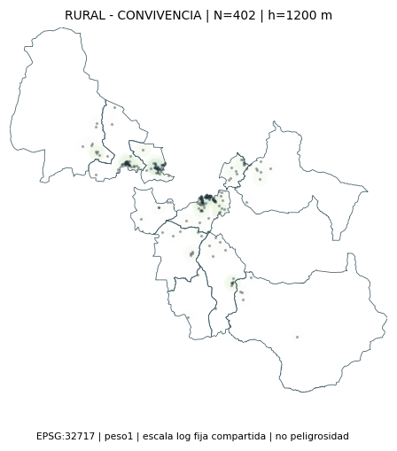
RURAL / CONVIVENCIA: 1500 m Mapas Gi* recalculados
URBANO / DELINCUENCIA - significancia nominal, sin FDR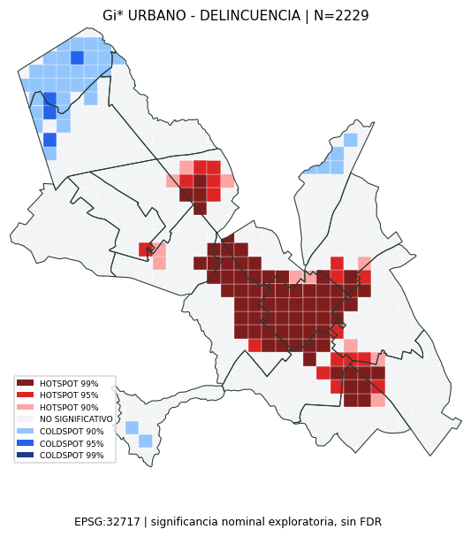
URBANO / VIOLENCIA - significancia nominal, sin FDR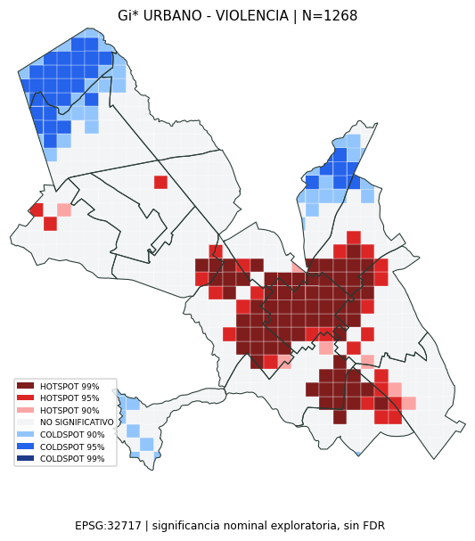
URBANO / CONVIVENCIA - significancia nominal, sin FDR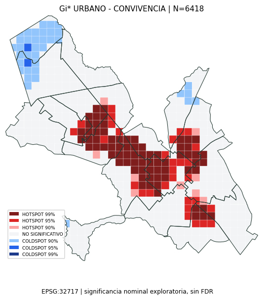
RURAL / DELINCUENCIA - significancia nominal, sin FDR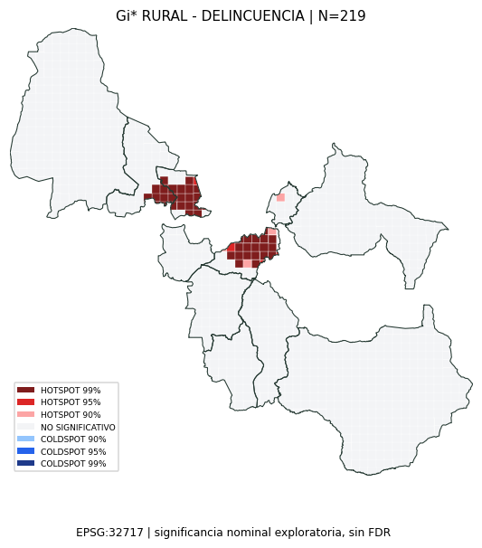
RURAL / VIOLENCIA - significancia nominal, sin FDR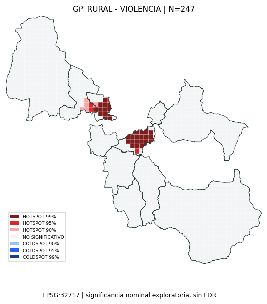
RURAL / CONVIVENCIA - significancia nominal, sin FDR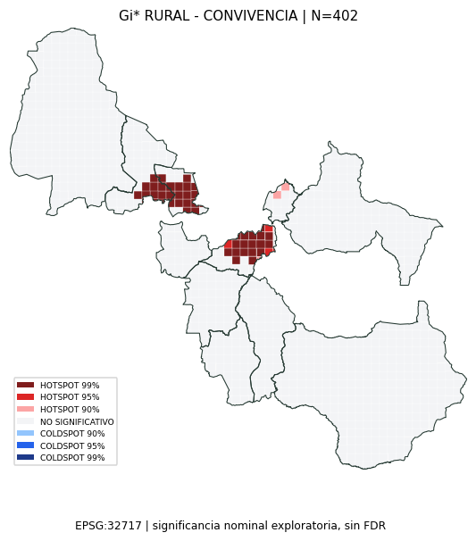
Aportes al centro H-I-J-K
Las clases originales 4/5 ya se excluian. Cuatro registros originalmente Violencia pasan ahora a institucional; dos pertenecen al ambito urbano operativo. Bajo el nuevo diccionario, su aporte al KDE central anterior es 0.0244%. CORREGIDO_*_700 modifica solo la clasificacion; NUEVO cambia solo el radio. XY de frecuencia global >=10 define recurrencia alta; su aporte no demuestra error o causalidad.
En el control de calidad, repeticion y coordenadas unicas corresponden a cada universo. Los flags de la base derivada utilizan la frecuencia global.
12-13. Gi* urbano / rural
Misma malla/vecindad: urbano 250/500 m; rural 1000/2000 m. Incluye celdas vacias y peso propio. Significancia nominal exploratoria, sin FDR. No se fuerzan coldspots.
14. Centro H-I-J-K antes / despues
PUBLICADO reconstruye puntos y clasificacion anteriores a 700 m con unidades y escala comunes, no los pixeles del renderer antiguo. TODOS e INSTITUCIONAL son contrafactuales; RECLASIFICADO_INSTITUCIONAL identifica los registros antes violentos. Masa integrada no equivale a conteo absoluto del centro.
PUBLICADO_DELINCUENCIA_700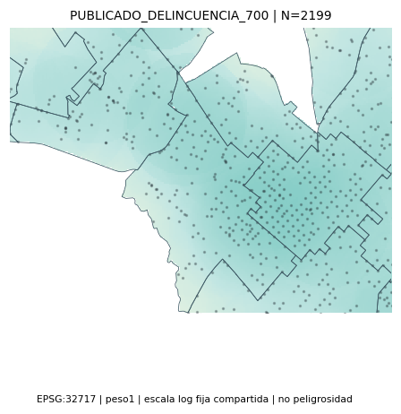
CORREGIDO_DELINCUENCIA_700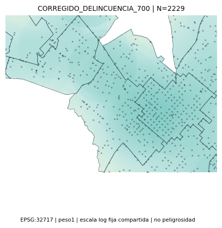
NUEVO_DELINCUENCIA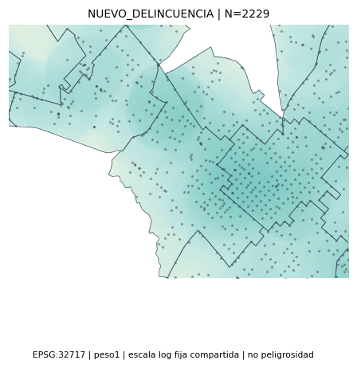
PUBLICADO_VIOLENCIA_700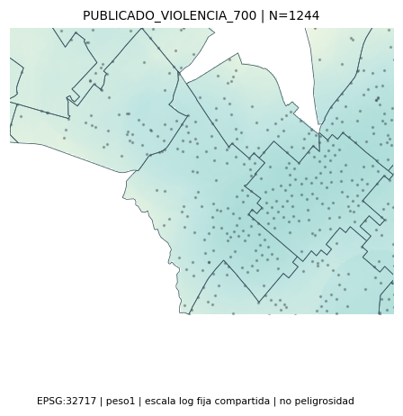
CORREGIDO_VIOLENCIA_700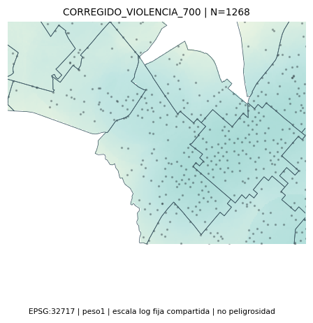
NUEVO_VIOLENCIA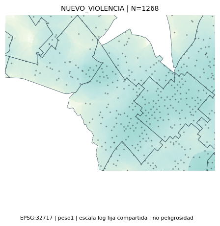
PUBLICADO_CONVIVENCIA_700CORREGIDO_CONVIVENCIA_700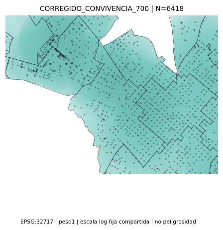
NUEVO_CONVIVENCIA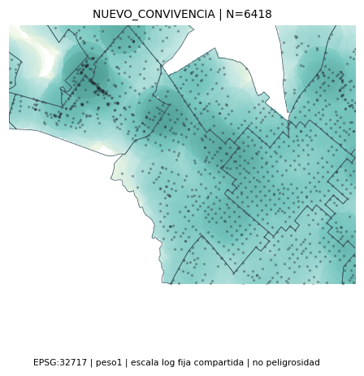
PUBLICADO_GENERAL_ANALITICO_700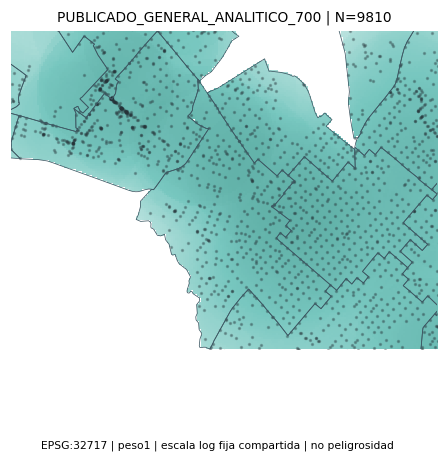
PUBLICADO_RECLASIFICADO_INSTITUCIONAL_700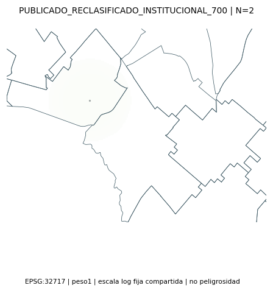
CONTRAFACTUAL_TODOS_700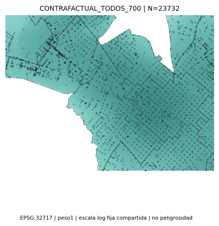
CONTRAFACTUAL_INSTITUCIONAL_700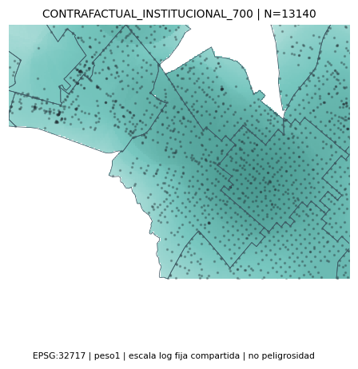
15-16. Controles y archivos
Agregados dependientes de incidentes actualizados. Poblacion, geometria de cobertura de 31 camaras y accesibilidad poblacional/policial intactas. Originales y limites preservados.
Validacion automatizada | 33 evaluaciones | Comparacion central | Informe y archivos modificados | Abrir visor